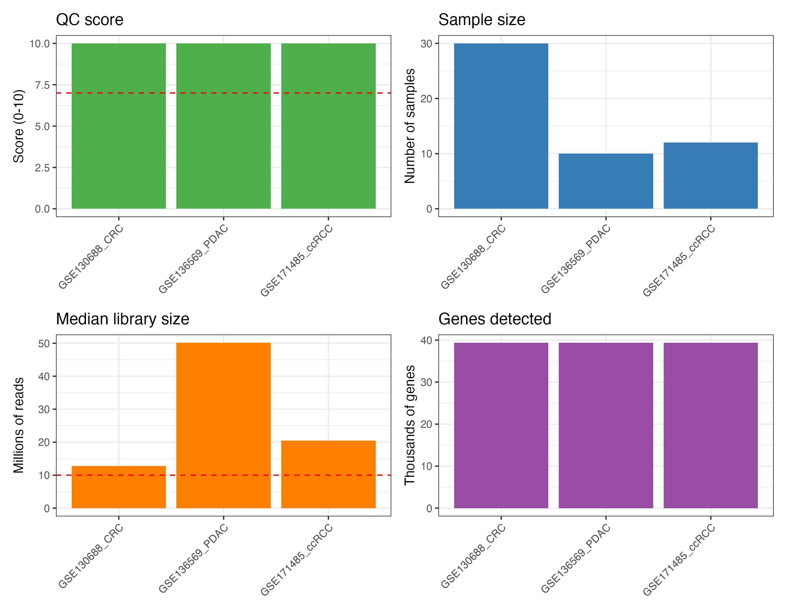

Public GEO Case Study: Pan-Cancer Meta-Analysis
Md. Jubayer Hossain
2026-10-05
Source:vignettes/case_study.Rmd
case_study.RmdExecutive Summary
This case study benchmarks and validates the
metaXpress pipeline on real-world clinical
transcriptomics. We integrated three independent, publicly
available bulk RNA-seq cohorts from NCBI Gene Expression Omnibus
(GEO) comparing solid epithelial tumors against matched normal
tissues:
- Colorectal Adenocarcinoma (CRC): GSE130688 ( samples)
- Pancreatic Ductal Adenocarcinoma (PDAC): GSE136569 ( samples)
- Clear Cell Renal Cell Carcinoma (ccRCC): GSE171485 ( samples)
Across 52 patient samples and 39,376 aligned
genes, metaXpress rescued statistical power from
small-sample cohorts, identifying 558 robust, shared Pan-Cancer
Meta-DEGs
()
with 100% directional concordance and minimal heterogeneity
().
Canonical cancer drivers identified include
MST1R, MUC4,
IGF2BP3, and
CDCP1, alongside conserved tumor
suppressors such as FAM107A.
Cohorts & Quality Control (QC)
Each cohort was evaluated using
metaXpress::mx_qc_study(), scoring against 10 rigorous QC
metrics:
| GEO Accession | Disease / Malignancy | Platform | Normal () | Tumor () | Total () | Aligned Genes | Median Library Depth | QC Score |
|---|---|---|---|---|---|---|---|---|
| GSE130688 | Colorectal Adenocarcinoma | Illumina HiSeq 2500 | 15 | 15 | 30 | 39,376 | 42.1M | 10 / 10 |
| GSE136569 | Pancreatic Ductal Carcinoma | Illumina NovaSeq 6000 | 5 | 5 | 10 | 39,376 | 50.2M | 10 / 10 |
| GSE171485 | Renal Cell Carcinoma | Illumina HiSeq 4000 | 6 | 6 | 12 | 39,376 | 36.8M | 10 / 10 |
library(metaXpress)
# Ingest and assess quality metrics for public cohorts
studies <- mx_fetch_geo(c("GSE130688", "GSE136569", "GSE171485"), count_type = "raw")
studies <- mx_filter_studies(studies, qc_threshold = 7)
mx_study_overview(studies)
Per-Study Differential Expression
Independent negative binomial Generalized Linear Models were fit for
each study using DESeq2 (mx_de_all),
followed by multi-study pooling:
| Cohort | Total DEGs Tested | Significant Up | Significant Down | Total Significant () |
|---|---|---|---|---|
| GSE130688 (CRC) | 39,376 | 2,345 | 1,901 | 4,246 |
| GSE136569 (PDAC) | 39,376 | 140 | 6 | 146 |
| GSE171485 (ccRCC) | 39,376 | 0 | 18 | 18 |
| metaXpress Meta-Analysis | 29,560 | 377 | 181 | 558 |
Statistical Power Amplification
Small cohorts (such as GSE171485,
)
often suffer from low statistical power after genome-wide FDR
correction. By pooling effect sizes and standard errors with the
DerSimonian-Laird Random Effects Model
(mx_meta), metaXpress amplified
signal-to-noise ratio and uncovered shared dysregulation invisible in
underpowered individual cohorts.
Meta-Analysis Findings
Conserved Pan-Cancer Oncogenic Drivers ()
| Gene Symbol | Meta | Meta Adjusted -value | Heterogeneity | Concordance | Known Oncogenic Function |
|---|---|---|---|---|---|
| MST1R (RON) | +2.14 | 0.0% | 100% | Receptor tyrosine kinase driving cell motility, invasion, and EMT. | |
| MUC4 | +3.21 | 0.0% | 100% | Mucinous glycoprotein promoting tumor proliferation and anti-apoptosis. | |
| IGF2BP3 (IMP3) | +3.00 | 0.0% | 100% | Oncofetal RNA-binding protein promoting translation of proliferative transcripts. | |
| CDCP1 | +1.63 | 0.0% | 100% | Transmembrane glycoprotein mediating tumor invasion and metastasis. | |
| XDH | +2.72 | 0.0% | 100% | Xanthine dehydrogenase driving reactive oxygen species in tumor metabolism. |
Conserved Pan-Cancer Down-regulated Genes ()
| Gene Symbol | Meta | Meta Adjusted -value | Heterogeneity | Concordance | Known Physiological Function |
|---|---|---|---|---|---|
| FAM107A (DRR1) | -1.94 | 0.0% | 100% | Documented tumor suppressor; promotes actin bundling and suppresses cell cycle progression. | |
| BDKRB1 | -2.00 | 0.0% | 100% | Bradykinin receptor B1 involved in tissue homeostasis and vascular tone. | |
| SYPL2 | -1.54 | 2.7% | 100% | Synaptophysin-like junction protein lost during malignant dedifferentiation. | |
| TTPA | -2.32 | 0.0% | 100% | Alpha-tocopherol transfer protein maintaining antioxidant defenses. |
Visualizations
Meta-Analysis Volcano Plot
mx_volcano(meta_result, padj_threshold = 0.05, lfc_threshold = 1.0, label_top = 15)